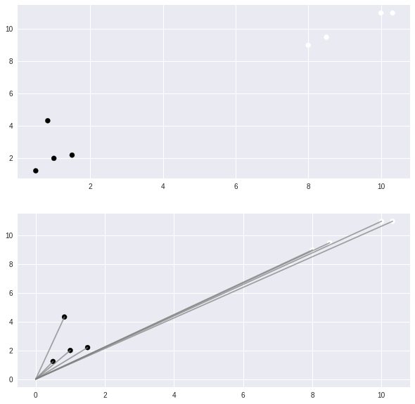
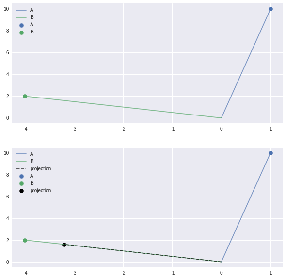

Support Vector Machine¶
This is ongoing work. * only one vs rest * -1 and +1
[10]:
import numpy as np
import pandas as pd
import matplotlib.pyplot as plt
import seaborn as sns
from matplotlib import style
style.use("seaborn")
%matplotlib inline
[145]:
dataset = np.array([
[1,2,1],
[8,9,-1],
[1.5,2.2,1],
[10,11,-1],
[0.5,1.23,1],
[8.5,9.5,-1],
[0.83,4.33,1],
[10.32,11,-1]
])
columns = ['f1','f2','target']
X = dataset[:,[0,1]]
y = dataset[:,[-1]]
Vectors¶
[12]:
fig = plt.figure(figsize=(10,10))
ax = fig.add_subplot(2,2,(1,2))
ax.scatter(dataset[:,[0]],dataset[:,[1]],c=dataset[:,[-1]],s=50)
ax = fig.add_subplot(2,2,(3,4))
ax.scatter(dataset[:,[0]],dataset[:,[1]],c=dataset[:,[-1]],s=50)
for i in dataset[:,[0,1]]:
ax.plot([0,i[0]],[0,i[1]],c='grey',alpha=0.7)
plt.show()

dot product¶
[13]:
x = np.array([[1],[2]])
y = np.array([[2],[3]])
(
x.shape ,
y.shape
)
[13]:
((2, 1), (2, 1))
[14]:
x * y
[14]:
array([[2],
[6]])
cross product¶
[15]:
(
x ,
y.T ,
x @ y.T
)
[15]:
(array([[1],
[2]]),
array([[2, 3]]),
array([[2, 3],
[4, 6]]))
magnitude \(||\vec{A}||\)¶
[16]:
(
x,
np.sqrt(np.sum(x**2)),
np.linalg.norm(x)
)
[16]:
(array([[1],
[2]]),
2.23606797749979,
2.23606797749979)
project \(\vec{A}\) to \(\vec{B}\)¶
\[proj_\vec{A}(\vec{B}) = (\vec{A}.\vec{B}).\frac{\vec{B}}{||\vec{B}||^2}\]
dot product¶
$:nbsphinx-math:vec{A}.:nbsphinx-math:vec{B} \sim `A^T.B :nbsphinx-math:sim `B @ A.T $
\(B @ A.T \sim A @ B.T\) (only difference in shape)
[124]:
W = np.array([[1,3]])
X = np.array([[4,5],[6,7],[1,8]])
W.shape, X.shape
[124]:
((1, 2), (3, 2))
[125]:
W @ X.T
[125]:
array([[19, 27, 25]])
[126]:
X @ W.T
[126]:
array([[19],
[27],
[25]])
Projection¶
[110]:
def projection(A, B):
return (B @ A.T) * (B / np.linalg.norm(B)**2)
[114]:
A = np.array([[1,10]])
B = np.array([[-4,2]])
fig = plt.figure(figsize=(10,10))
ax = fig.add_subplot(2,2,(1,2))
ax.scatter(A[:,[0]],A[:,[1]],s=70,label="A")
ax.scatter(B[:,[0]],B[:,[1]],s=70,label="B")
for i in A:
ax.plot([0,i[0]],[0,i[1]],alpha=0.7,label='A')
for i in B:
ax.plot([0,i[0]],[0,i[1]],alpha=0.7,label='B')
ax.legend(loc='best')
ax = fig.add_subplot(2,2,(3,4))
ax.scatter(A[:,[0]],A[:,[1]],s=70,label='A')
ax.scatter(B[:,[0]],B[:,[1]],s=70,label='B')
for i in A:
ax.plot([0,i[0]],[0,i[1]],alpha=0.7,label='A')
for i in B:
ax.plot([0,i[0]],[0,i[1]],alpha=0.7,label='B')
proj = projection(A,B)
ax.scatter(proj[:,[0]],proj[:,[1]],s=70,label="projection",c='black')
for i in proj:
ax.plot([0,i[0]],[0,i[1]],c='black',alpha=0.7,label="projection",ls='--')
ax.legend(loc='best')
plt.show()

convex optimization docs
Cost function¶
[186]:
C = 1.0
distance = 1 - y * (W @ X.T)
distance[distance<0] = 0
distance = np.max(d,axis=1,keepdims=True)
cost = (W @ W.T / 2) - (C * np.mean(distance,keepdims=True))
cost
[186]:
array([[-17.16]])
[ ]: